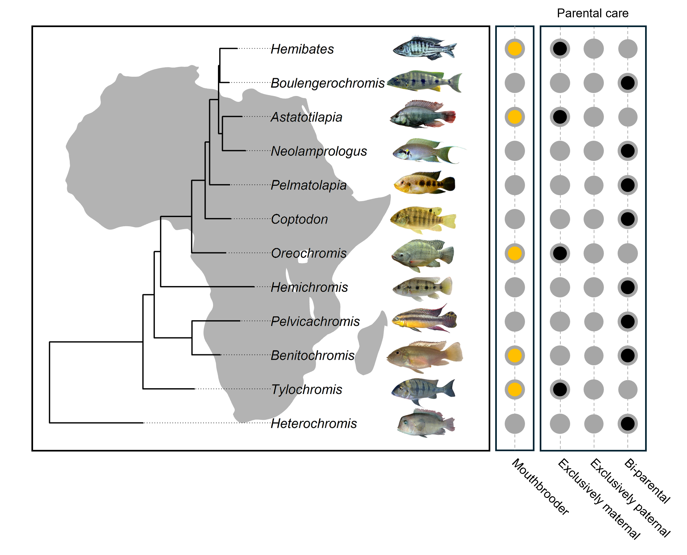
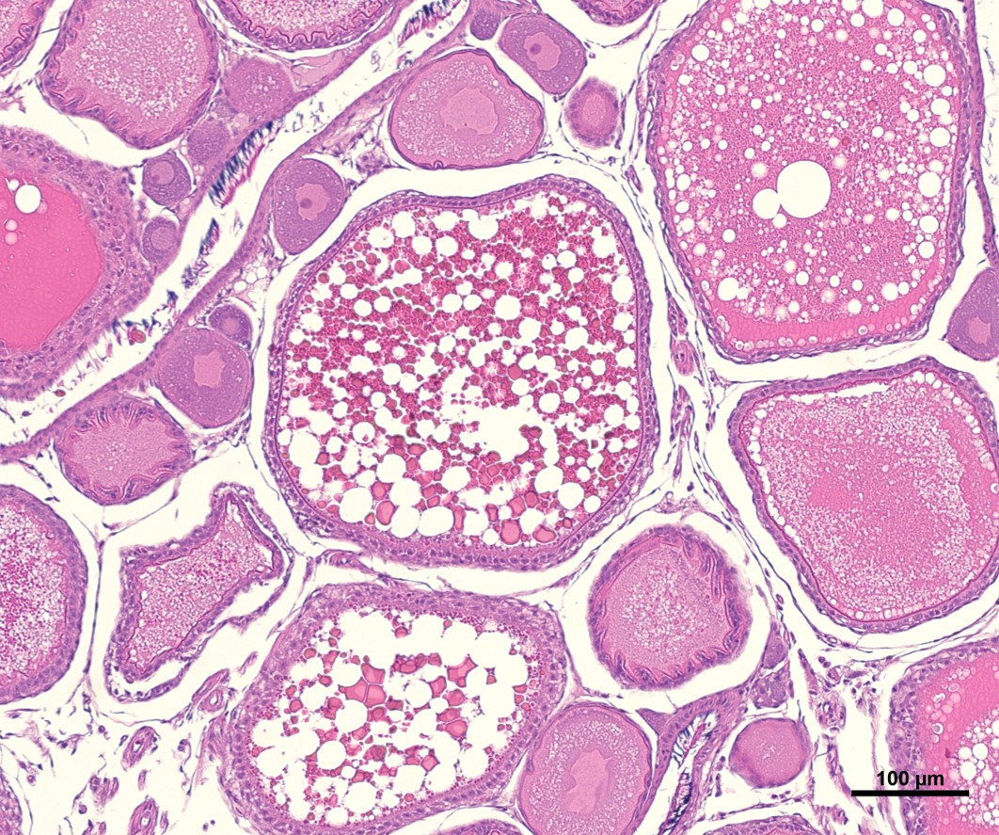

My research aims to understand the molecular basis of complex traits, how and why they have evolved across the Tree of Life, and how they are impacted by anthropogenic change.

Convergent evolution, in which similar traits develop independently in different lineages of organisms, is a major driver of biodiversity. Despite this, we still know little about the molecular mechanisms underlying the convergence of these traits. My work aims to use comparative genomics to better understand the molecular basis of convergent evolution using case studies on parental care. I am particularly interested in understanding the evolutionary genetics associated with the evolution of viviparity and mouthbrooding, two extreme forms of care that have evoled repeatedly across the Tree of Life.

Human-induced environmental change is a major cause of concern. My work aims to understand the impact of a range of pollutants, from pharmaceuticals to air pollutants, on a range of traits in animals. I am particularly passionate about the use of behavioural, morphological, and genetic methods in ectoxicology, and aim to combine these methods to better understand the mechanisms through which pollutants disrupt reproduction, cognition, and cardiac function.
My most recent postdoctoral work aims to investigate the evolution of growth, development, and aging across a range of taxa. In particular, I aim to investigate the molecular mechanisms associated with ageing and longevity in the greenland shark, as well as the evolutionary constraints underlying key growth and metabolism genes in mammals.